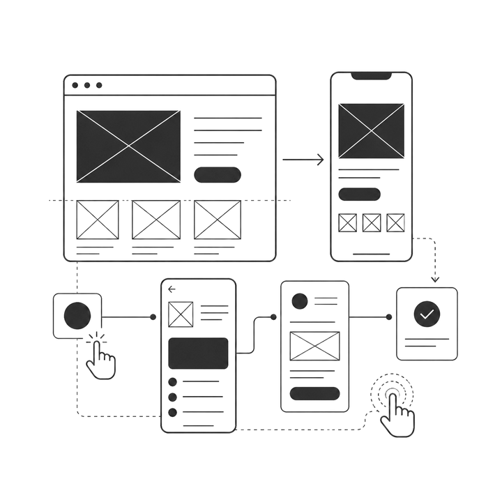
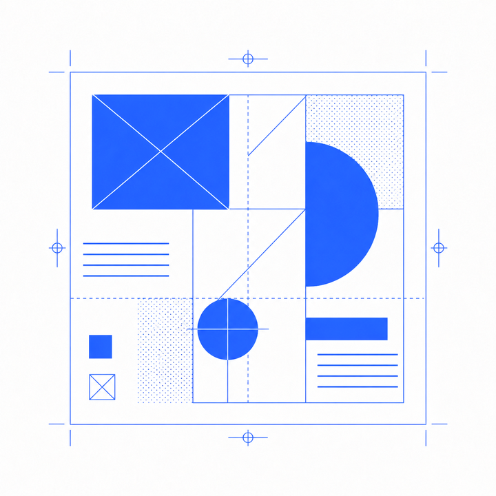
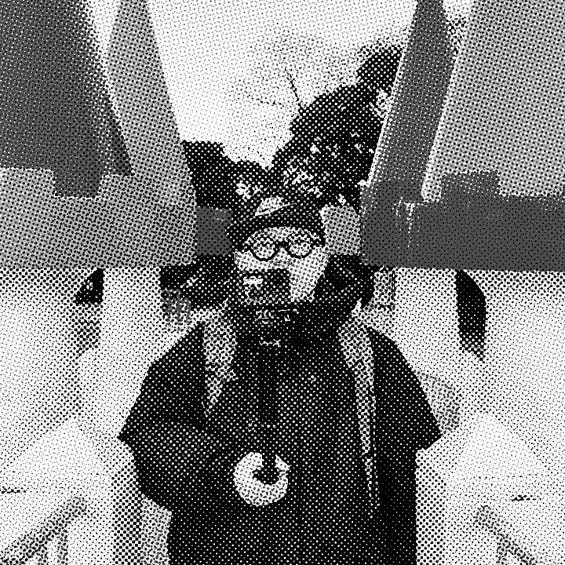

octoは、マルチな領域で活動する
デザインスタジオです。
Web Design
1枚のLPから複雑なコーポレートサイトまで。studioでの実装も請け負います。
UI/UX Design

複雑で曖昧な領域を画面デザインまで落とし込みます。ビジョンやシナリオから、画面デザインとデザインガイドラインまで。0→1の開発も、既存プロダクトの改善も。2B領域が専門ですが、2C領域も受け入れていますのでご相談ください。
Graphic Design

ロゴ、チラシ、冊子、名刺など、必要なデザインを一括で制作します。入稿までサポートしますので、初めての方もご安心ください。
AI Creative
ChatGPT/Gemini/Claudeを利用したアウトプットの作成・活用サポートを承ります。AIで作成したWeb・アプリ・UI・グラフィックの修正依頼も受け付けております。

Soichiro Iwai
千葉大学デザイン学科卒業。新卒で制作会社に入社。富士通株式会社を経て2023年にフリーランスとして独立。